The Shelf — Art Picks
tell me the letters in chat — e.g. "fall A, winter B, coffee C, stickers A"
Fall Garlands — for the bookshelf tracker
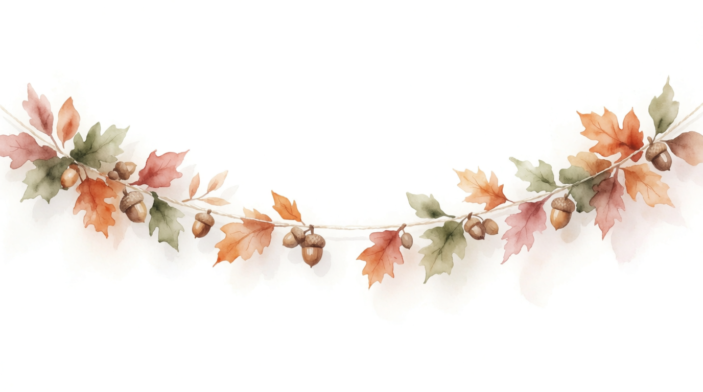
Awatercolor, soft & painterly
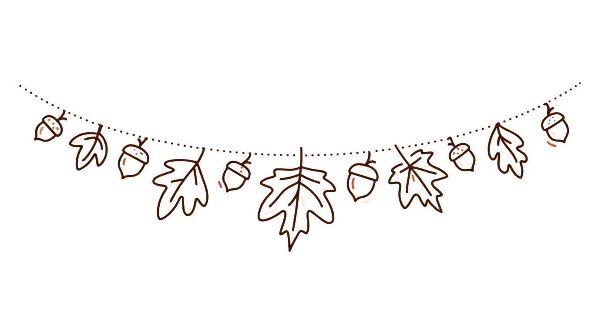
Bjournal doodle, ink line-art
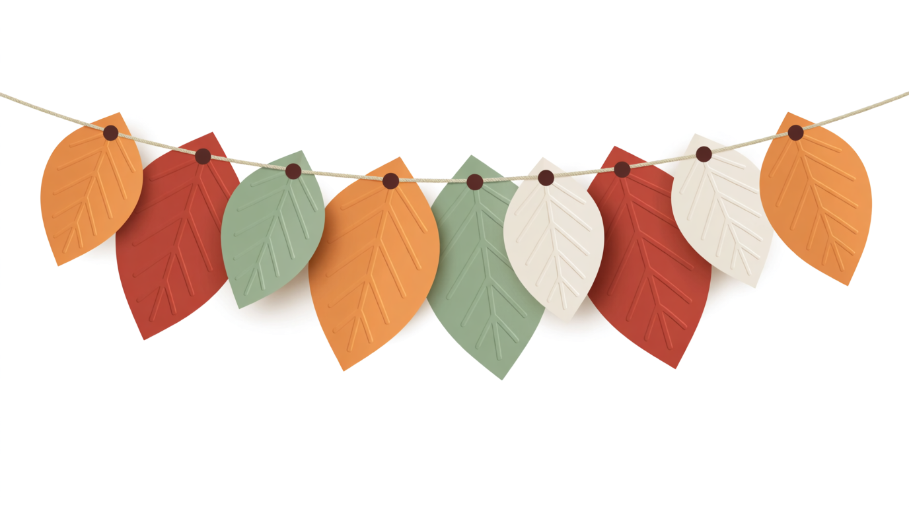
Cpaper-cut, flat & crafty
Winter Garlands
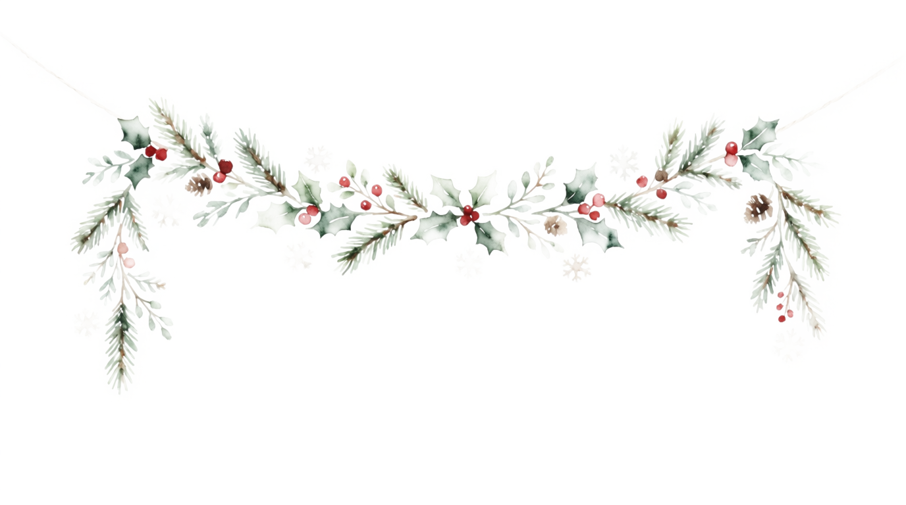
Awatercolor pine + berries
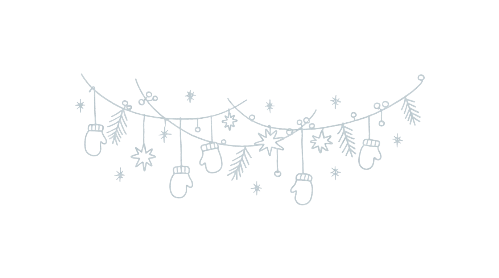
Bdoodle mittens + snowflakes
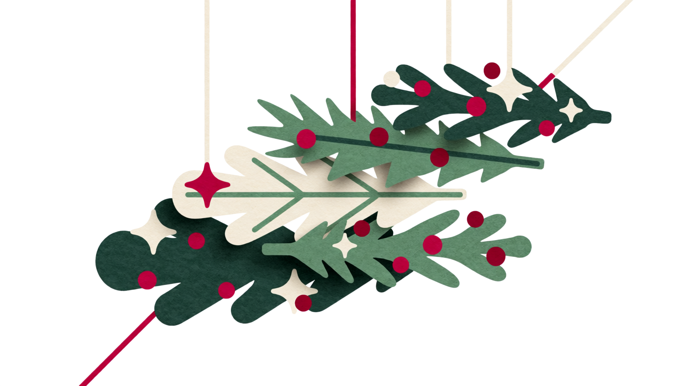
Cpaper-cut pine + stars
Spring Garlands
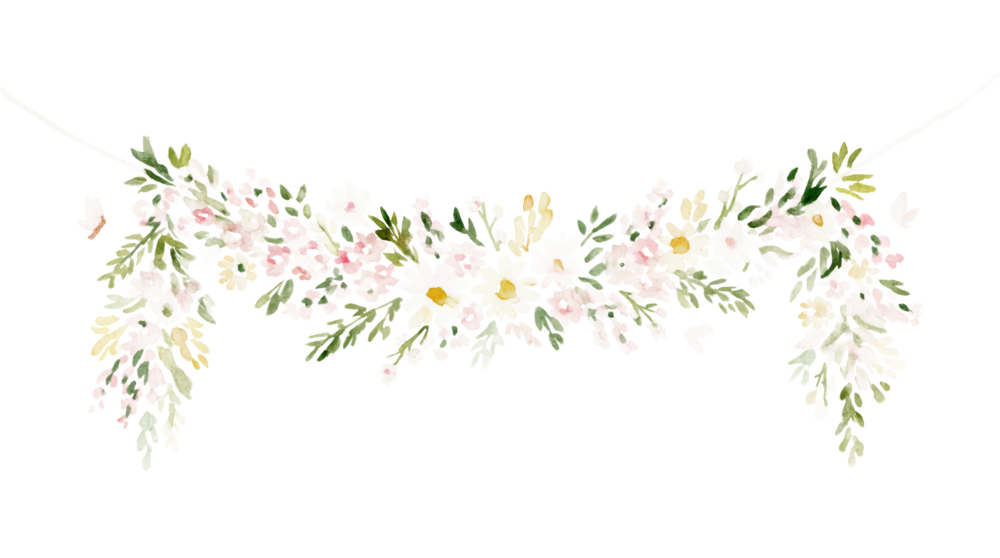
Awatercolor blossoms + butterflies
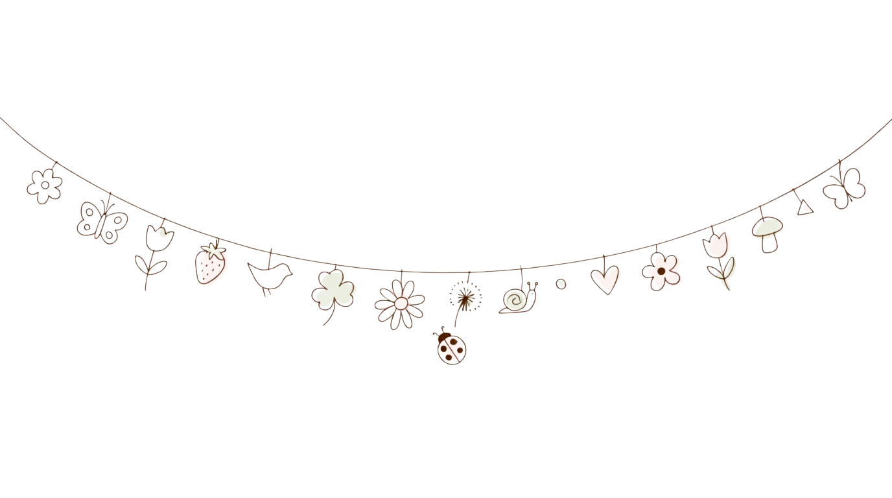
Bdoodle flowers + strawberries
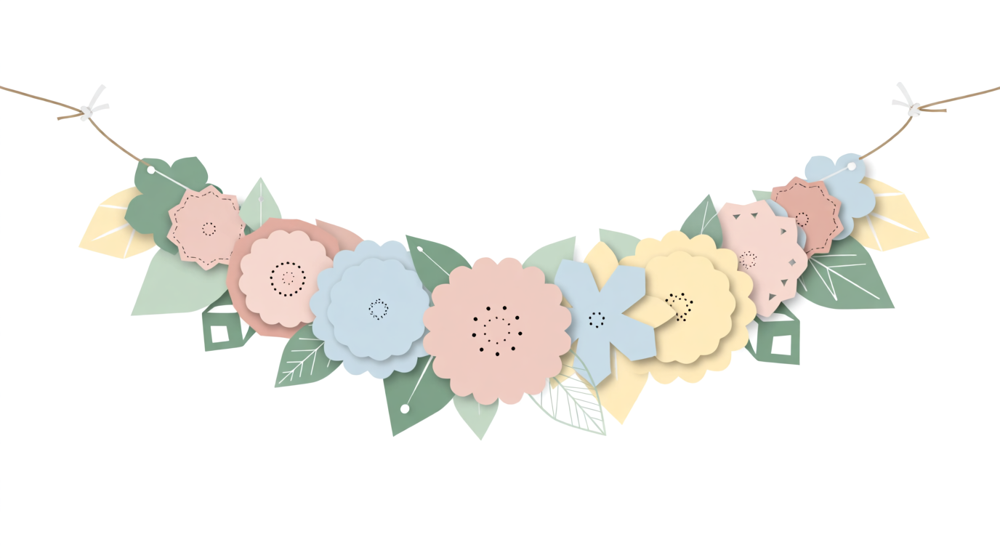
Cpaper-cut tulips
Summer Garlands
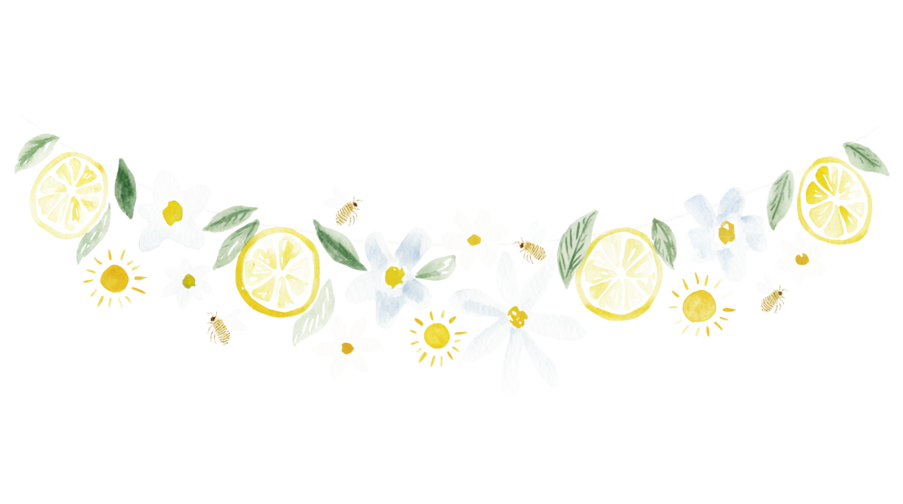
Awatercolor lemons + bees
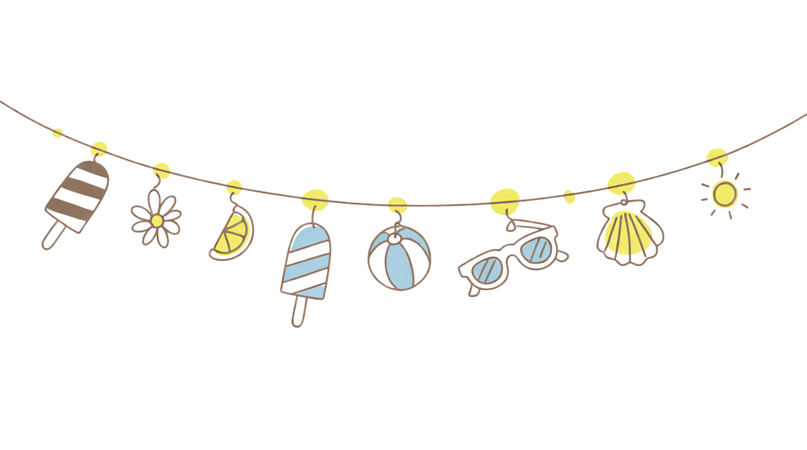
Bdoodle lemons + sunglasses
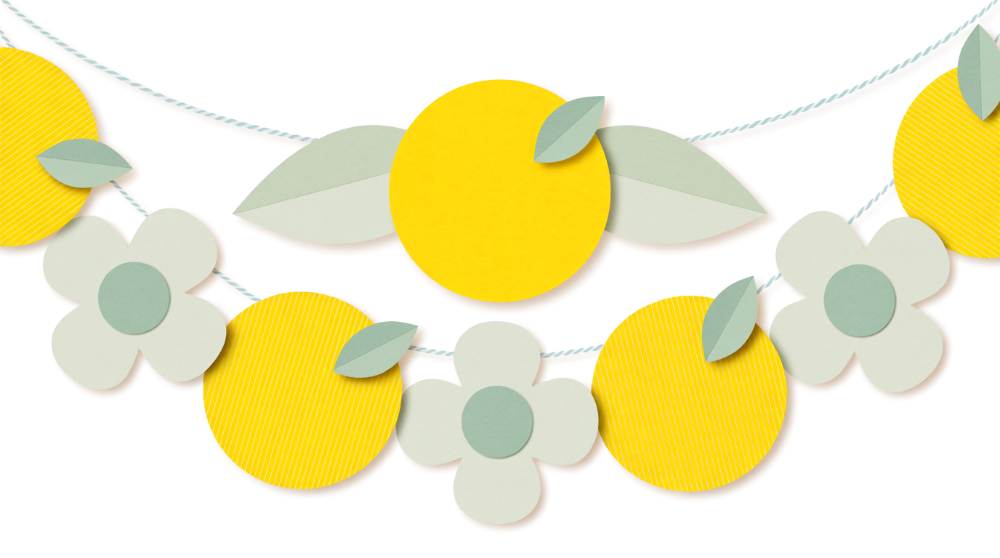
Cpaper-cut suns + flowers
Coffee Graphics — for the coffee corner
 A
Awatercolor cozy
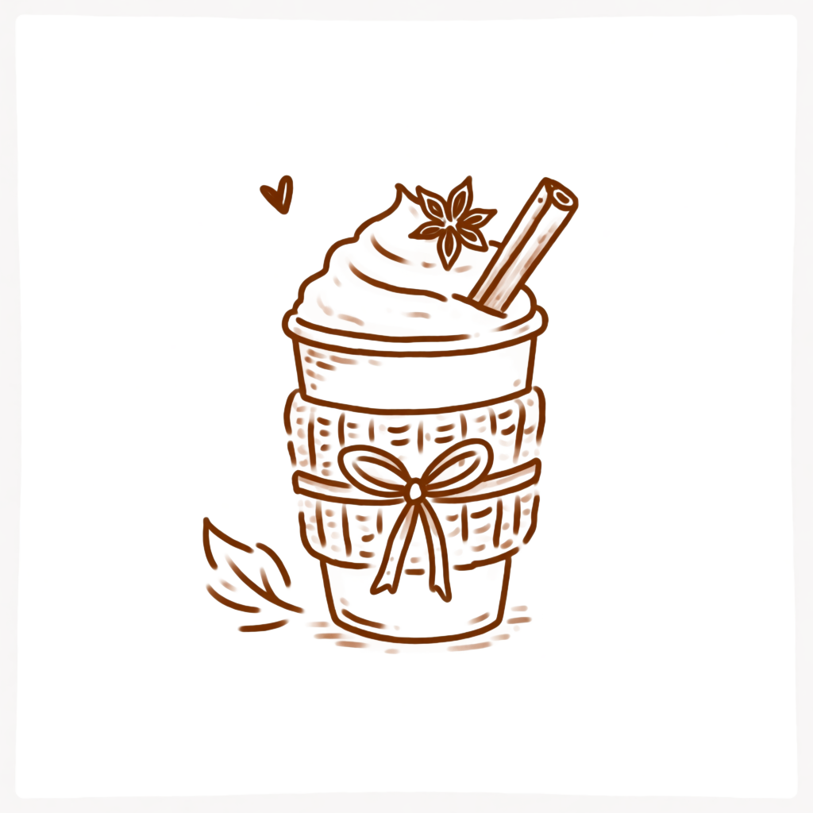
Bink doodle cute
flat premium
Sticker Sheets — fantasy-romance style (I'll write the quote labels)
each sheet has bookish motifs — once you pick, I'll label them: "one more chapter", "book boyfriend", "fae approved", "enemies to lovers", "spice rated", "mated"...
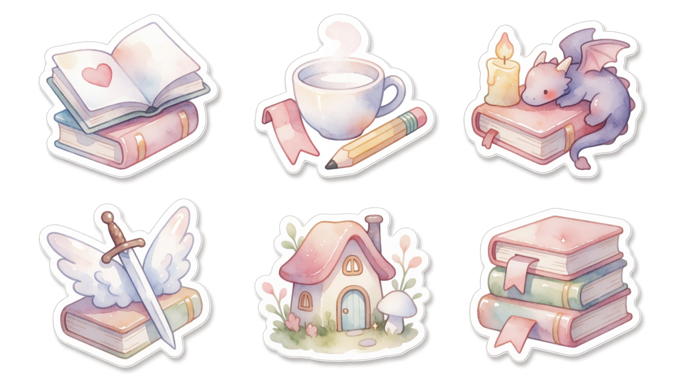
Awatercolor kawaii
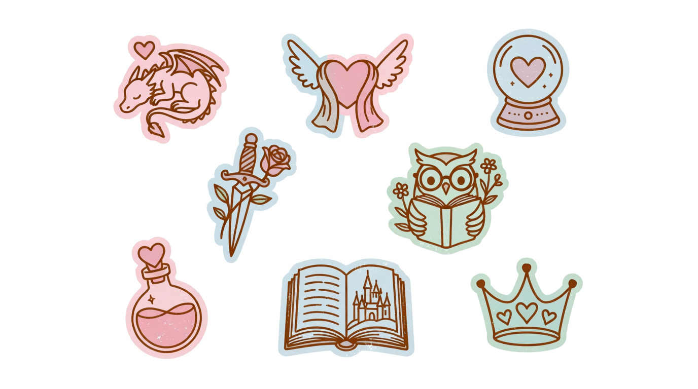
Bink doodle planner
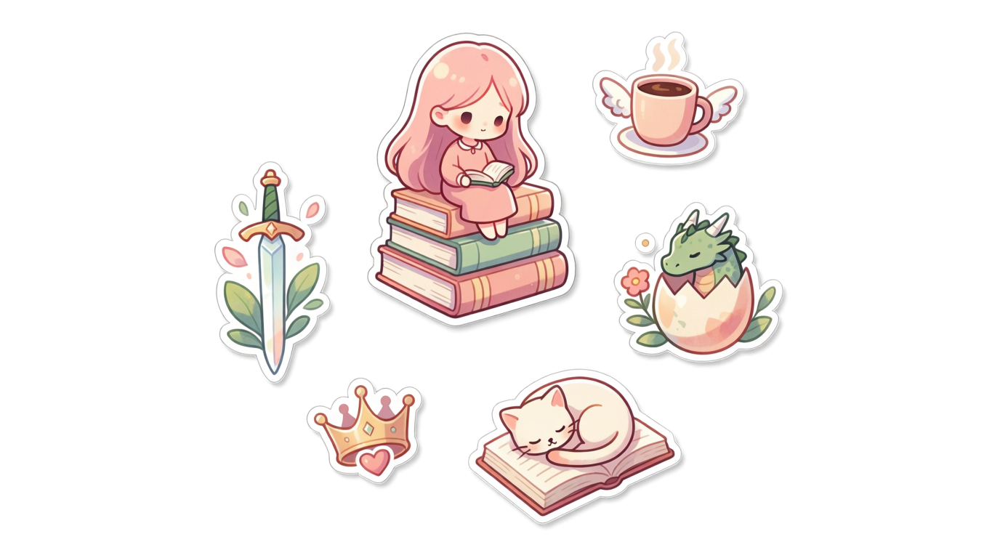
Cflat glossy vinyl
while you pick, I'm applying the rest of your feedback to the shelf — move the coffee graphic out of the box, shrink the quote, move "next being published" to the top, seal to bottom-left opaque, month dropdown, sequels dismiss buttons, and the anticipated-sequel tag.